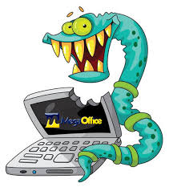
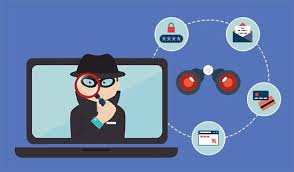

Amenazas al ordenador
Aquellos programas que afectan al funcionamiento de la computadora.
VIRUS

¿ Qué es ?
Un virus informático es un software que tiene por objetivo alterar el funcionamiento
normal de cualquier tipo de dispositivo informático, sin el permiso o el conocimiento
del usuario, principalmente para lograr fines maliciosos sobre el dispositivo.
¿ Cómo se detectan ?
● Rendimiento lento del sistema sin una razón aparente.
● Aparición de mensajes de error o ventanas emergentes no habituales.
● Archivos dañados o inaccesibles, y comportamientos anómalos del
dispositivo.
Consejos para evitar ser víctima
● Mantener el software del sistema y antivirus actualizado.
● No descargar archivos o software de sitios no confiables.
● Realizar copias de seguridad regulares de la información más importante.
TROYANOS
¿ Qué es ?
Malware que se disfraza de software legítimo para que el usuario lo instale,
permitiendo al ladrón tomar el control del sistema o robar información.
¿ Cómo se detectan ?
● Comportamiento extraño de programas legítimos o la aparición de programas
no instalados por el usuario.
● Pérdida de control del sistema o acceso no autorizado a ciertos datos.
● El sistema se conecta a servidores no identificados.
Consejos para evitar ser víctima
● Descargar software solo de fuentes confiables y oficiales.
● Utilizar un software de seguridad para escanear el sistema y detectar
programas maliciosos.
● No abrir archivos adjuntos ni ejecutar programas de fuentes desconocidas.
SPYWARE

¿ Qué es ?
Es un software que se instala en el dispositivo de la víctima sin su conocimiento y
recopila información confidencial, como hábitos de navegación o credenciales.
¿ Cómo se detectan ?
● Disminución inexplicable del rendimiento del dispositivo.
● Comportamiento extraño del navegador, como ventanas emergentes o
redirecciones inusuales.
● Actividad sospechosa en cuentas personales, como el envío de correos
electrónicos no autorizados.
Consejos para evitar ser víctima
● Instalar software de detección de spyware y mantenerlo actualizado.
● No hacer clic en enlaces sospechosos o anuncios emergentes.
● Revisar regularmente las aplicaciones instaladas en el dispositivo y eliminar
aquellas desconocidas o sospechosas.
BLACK HACKERS
¿ Qué es ?
Son hackers que vulneran sistemas con fines maliciosos, como robar datos,
comprometer sistemas, o realizar ataques de ransomware.
¿ Cómo se detectan ?
● Actividad inusual en redes o sistemas, como accesos no autorizados.
● Transferencias de archivos no solicitadas o cambios en la configuración del
sistema.
● Detección de tráfico de red hacia servidores desconocidos.
Consejos para evitar ser víctima
●Implementar medidas de seguridad cibernética robustas como firewalls y
sistemas de detección de intrusos.
● Mantener todos los sistemas y programas actualizados con los últimos
parches de seguridad.
● Usar contraseñas seguras y únicas, además de autenticación multifactor en
todas las cuentas.